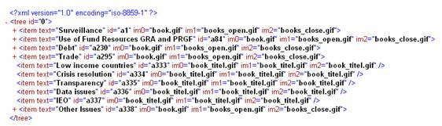

Dynamical loading means loading data on request. You
can split your data into parts by levels and decrease loading time this way.
For example initial xml document will be as follows:

Just add parameter child=”1” to all nodes which have
dependent elements (children) and child=”0” to all nodes without children.
<?xml
version="1.0" encoding="iso-8859-1" ?>
<tree
id=”0”>
<item text="Surveillance"
id="a1" im0="book.gif" … child=”1”/>
<item
…/>
…
<item
…/>
<item
text=”Low income countries” id=”a333” im0=”book_titel.gif” … child=”0”>
</tree>
As dynamical loading needs to process incoming url parameters to work really useful, it would be good to
use some server side programming language like ASP, ColdFusion, JSP or any
other. This is necessary on next stage.
If you use XML for building the tree, then you already
used the method
tree.setXMLAutoLoading(url)
When user trying to open node with child=”1” tree
looks for data on client side first – if no data found, then it goes to server
using URL specified in method mentioned above with id of node added to it,
like: http://127.0.0.1/myTree/tree.cfm?id=a1,
where “a1” is id of the node which should be opened. So, here you need a server
side language to process incoming id parameter and to put just required part of
XML into response (in our case the xml contains next level of a1 node):
<?xml version="1.0"
encoding="iso-8859-1" ?>
<tree
id=”a1”>
<item
text="Bilateral surveillance" id="a2"
im0="book.gif" im1="books_open.gif"
im2="books_close.gif" child=”1”/>
<item
…/>
</tree>
The same should be repeated for each level and each
node that has children. If you xml contains data from Database, it would be
much better to generate xml on request directly from db – otherwise you’d
better use the following way to reduce the number of parts:
You can split your xml document in any number of parts
(maximum – all levels, minimum - 1). For example you can load not only next
level of children for a1, but the
whole branch started from the level next to a1.
In this case initial loading of
the tree will be rather fast, as you load just one level, then if user opens
some node, the whole branch will be loaded (but not the whole tree), so in any way it is much faster than load the whole tree on
start.